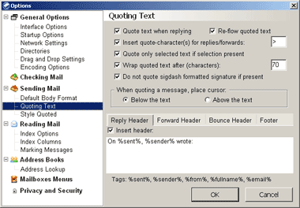

Vaarwel Outlook Express!
woensdag 13 augustus 2003 | Nerdisme
Na het nieuws dat Microsoft in de toekomst niet langer een stand alone versie van Internet Explorer zal uitbrengen, is vandaag nu ook het doek gevallen over hun e-mailprogramma Outlook Express.
“Our investment in the consumer space is now focused around Hotmail and MSN”, legt MS-product manager Dan Leach uit. In 2005, wanneer de nieuwe Windows verschijnt, zullen de huidige OE gebruikers dus een keuze moeten maken tussen een gratis Hotmail account – grijns – of de betalende grote broer van OE, Outlook 2003. De door de internet gemeenschap zorgvuldig opgestelde wishlist voor een volgende versie van OE valt in dovemansoren. Dat Express vandaag de meest gebruikte e-mailclient ter wereld is, kan Microsoft blijkbaar niet schelen. Gek is dat toch…
Ik zal met pijn in het hart afscheid nemen van Outlook Express. Want ondanks alle security risks, het totale gebrek aan features, en de – standaard – afwijking van de vele internet standaarden, ben ik het altijd blijven gebruiken. De interface is erg overzichtelijk, het is snel en het bijhouden van nieuwsgroepen verloopt heel soepel. Met een lapmiddel kan je er zelfs behoorlijk mee quoten.
Vanaf vandaag begint dus de serieuze zoektocht naar een alternatief. En er zijn er veel.
Thunderbird is nog niet volwassen, Eudora is een dyno en The Bat! doet pijn aan mijn ogen.
Office Outlook valt eveneens uit de boot: het kan niet overweg met nieuwsgroepen en vaagt zowat aan alle standaarden zijn voeten (je moet zelfs moeite doen om een text-only mailtje verzonden te krijgen). Daar kan ik gewoon niet mee leven. Bovendien is er nog steeds geen backupfunctie voorzien! Anderzijds is de ingebouwde kalender erg handig (maar ook weer volgens een eigen ‘Microsoft standaard’ die niet uitwisselbaar is).
Roel tipte ons vandaag over Pocomail. Ik heb het vanavond eens uitgeprobeerd. Waw! Alle e-mailfuncties waar ik ooit van droomde in één programma: redirecting, follow-up messages, vertical message panes (een primeur!), robuuste quote/rewrap engine, ... Er is slechts één nargheidje dat me tegenhoudt: de ondersteuning van Usenet lijkt nergens op. En zo staan we weer aan start.
Alle tips zijn welkom…

Screenshot: Pocomail quote met stijl én standaarden.
Michaël De Graeve op 13 augustus 2003
Nieuwsgroepen lees je nu eenmaal beter met een nieuwslezer eh... De ondersteuning van Usenet in OE valt mij trouwens ook tegen; ik gebruik het al een hele tijd niet meer. En om binaire bestanden te downloaden gebruik je sowieso toch best iets anders, dus ja...